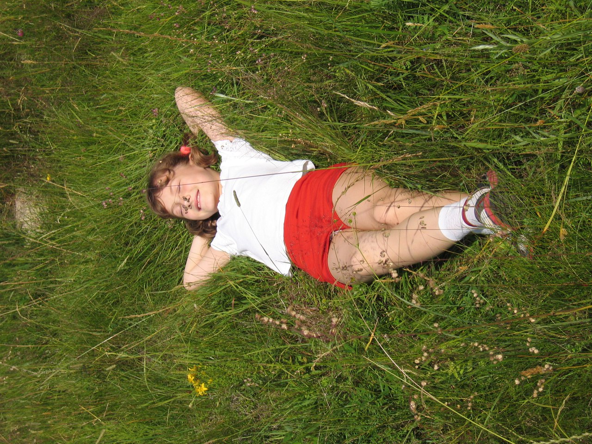
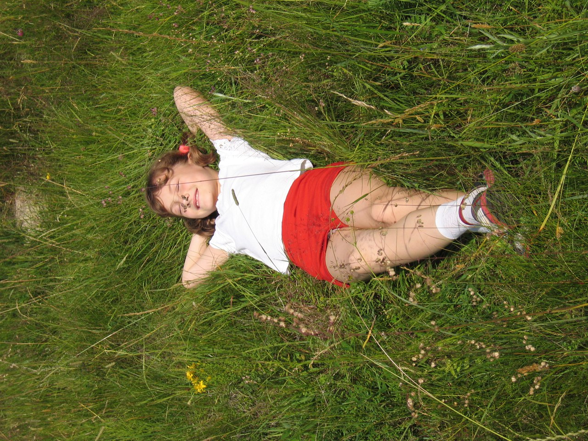

Не йди туди, куди веде дорога. Йди туди, де дороги немає, і залиш свій слід...
Ральф Уолдо Емерсон
Подорож - містична вистава життя. Трагедія чи комедія - залежить вже від нас, але обов'язково - з ноткою пригод!
Кажуть, що з мандрів повертаєшся вже не таким, яким відправлявся в них. В дорозі твориться магія, і її не під силу виловити навіть професійним детективам.
І не важливо чи це подорож на інший континент, в іншу країну чи просто в сусіднє місто. В дорогу пускаються тоді, коли хочуть відчути щось нове всередині, пізнати нові куточки планети і власної душі.
Завдяки батькам я подорожую з самого малку. Починаючи з рідних та неповторних Карпат і завершуючи іншими країнами, в яких живуть інші люди з абсолютно автентичною культурою та світоглядом.
Це направду вражає! Адже навіть світогляд у народів відрізняється. І ще більше заворожує це тоді, коли приходить розуміння цього факту.
Я вже навіть не підрахую скільки разів була в горах і в скількох - також, та найбільше мене причаровують Карпати. Є в них щось містичне, причаровуюче і рідне-рідне! І навіть попри те, що я там була безліч разів, до багатьох куточків Карпат я ще так і не добралася. Але це все є в планах) І також в планах є покататися по горах на велосипеді, адже цих захоплень я ще не поєднувала! Більше про двоколісного є на цій сторінці.
Тож якщо хочете - приєднуйтеся, буду рада компанії!
По Європі я теж вже покаталася немало. В переважній більшості - з батьками, та багато країн відвідала і з танцювальними колективами, в яких є змалку, і про які розповідаю на сторінці танці.
Фото з мандрівок по Україні, Європі та Карпатах Ви можете переглянути трішки вище.
А карту місць, де я вже була - трішки нижче)
Ще одна річ, яка кожного разу манить в гори - це трави. Напевне, передалось по генах від батьків, та я жити не можу без трав, грибів та ягід. З мене вже навіть жартували, що всі люди як люди, а Яринка не може повернутися з Карпат з порожніми руками) Та більше про це і не тільки на сторінці чай.
Річ, яку я можу сказати напевне - це те, що "краще гір можуть бути лиш гори, на яких ти ще не бував". І хоч це не моя фраза, та я з нею цілком і повністю погоджуюся!
Подорожуйте, насолоджуйтеся, відкривайте нове для себе і в собі, і Ви побачите як світ навколо набуває нових барв і горизонти розширюються!
І, звісно, кличте мене з собою! ;)
Тут Ви знайдете перелік країн, міст та містечок, які я відвідала)
Turkey
Анкара
Анталія
Стамбул
Самсун
Кемер
Міра
Кападокія
Аланія
Сіде
Белек
Памукалле
та інші
Greece
Родос
Italy
Мілан
Бергамо
Верона
Венеція
Калабрія
Серіате
озеро Комо
Belarus
Мінськ
Bulgaria
Софія
Несебр
Сан-Андре
Бургас
та інші
France
Париж
Стразбург
та інші
Germany
Фрайбург
Гамбург
Дрезден
та інші
Austria
Зальцбург
Відень
та інші
Croatia
Брелла
Montenegro
Будва
Hungary
Будапешт
Сан-Антоніо
та інші
Poland
Краків
Перемишль
Саліна
Жешув
та інші
Czech Republic
Брно
Прага
Карлові Вари
та інші
Швейцарія
Кіасо
Комо
Netherlands
Амстердам
Заансе
Утрехт
Кокенкоф
Нордвейк